見積書作成アプリ 取扱説明書
1. はじめに
本システムは、見積書の作成、編集を行うためのWebアプリケーションです。
社用のandroid端末に最適化されています。特にバーコードリーダーを使用する際は、android端末での使用をお勧めします。
kintone上に仮押在庫という項目を設定しています。
- 仮押在庫:商品毎に見積上で登録された数量を合計して記録しています。
見積作成時に表示される差引実は仮押在庫を引いた数量です。
65+
2. ログイン・アクセス方法
Webブラウザ（Chrome, Safariなど）を使用してシステムにアクセスします。
https://quote-manager-yqg8.onrender.com
こちらのリンクまたは下のQRコードからアクセスしてください。
- 推奨ブラウザ: Google Chrome, Safari, Microsoft Edge
- モバイル利用: スマートフォンのブラウザメニューから「ホーム画面に追加」を行うことで、アプリアイコンから直接起動できるようになります（PWA対応）。
3. 画面の見方と基本操作
3.1 見積一覧画面（ホーム）
ログインすると最初に表示される画面です。登録済みの見積データが一覧で表示されます。
- PC表示: 詳細な情報が表形式で表示されます。
- スマホ表示: 重要な情報をカード形式で見やすく表示します。
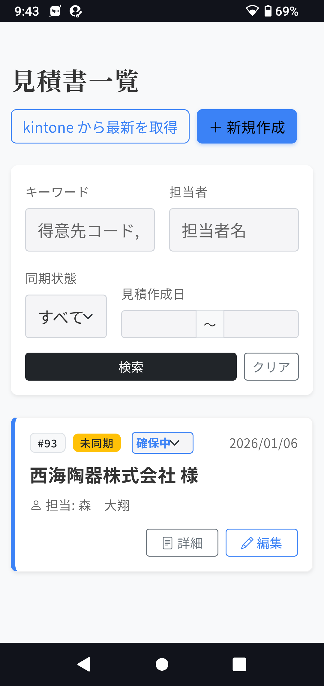
検索・フィルタ機能
画面上部の検索エリアを使用して、目的の見積を探すことができます。
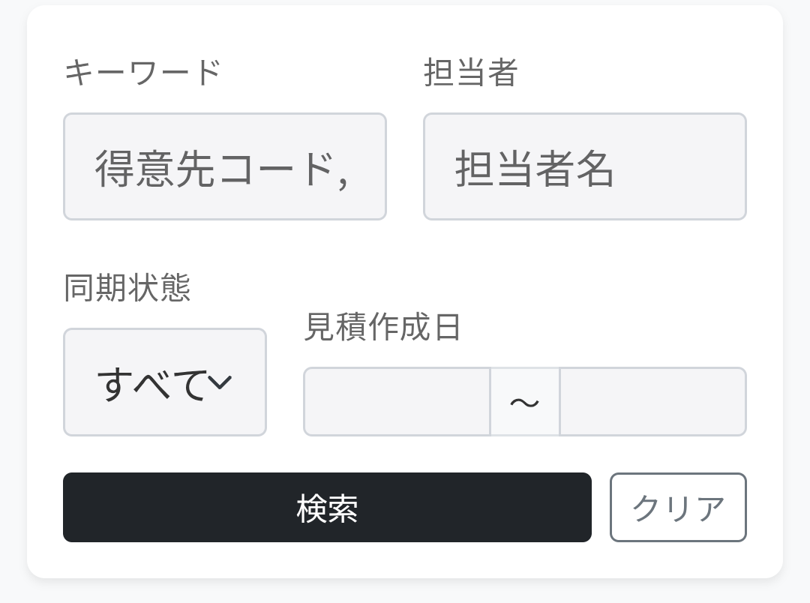
- キーワード: 得意先コードや得意先名で検索します。
- 担当者: 担当者名で絞り込みます。
- 同期状態: Kintoneとの連携状態（同期済/未同期/失敗）でフィルタリングします。
- 見積作成日: 指定した期間に作成された見積を表示します。
Kintone同期
「kintone から最新を取得」ボタンを押すと、Kintone上の最新データを取得し、システムに反映させます。
kintone上でデータを編集した際に押してください。
在庫ステータス変更
一覧のプルダウンから、在庫の確保状況（確保中/解放済）を直接変更できます。
解放済に変更すると仮押在庫から数量が引かれます。
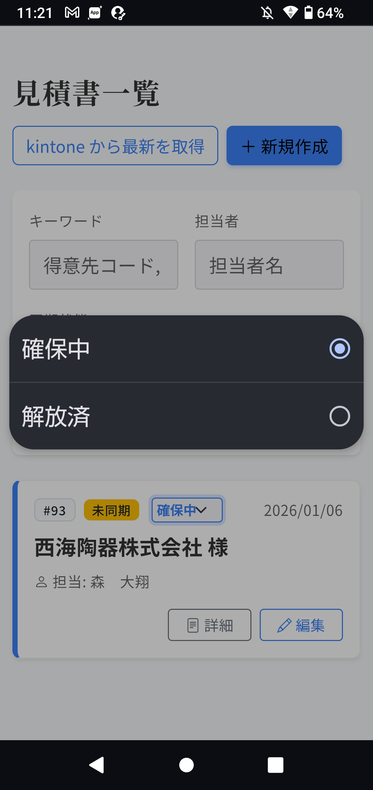
3.2 見積詳細画面
見積登録、編集直後、または一覧画面の「詳細」ボタン、またはカード（スマホ表示時）の「詳細」ボタンを押すと、見積の詳細情報が表示されます。
この画面では、登録された見積の内容（得意先、担当者、明細など）を確認できます。
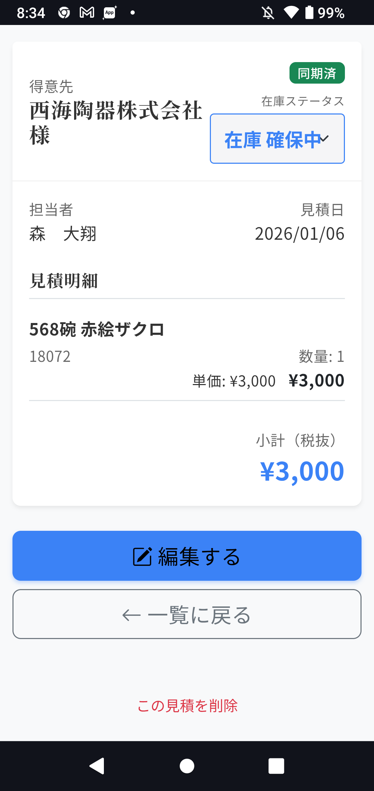
- 操作:
- 一覧に戻る: 一覧画面に戻ります。
- 編集する: この見積の編集画面へ移動します。
- この見積を削除: この見積を削除します。
3.3 見積の削除
不要になった見積データは以下の方法で削除できます。
※削除したデータは復元できませんのでご注意ください。
- 詳細画面から削除:
詳細画面の下部にある「この見積を削除」ボタンを押し、確認メッセージでOKを選択すると削除されます。
4. 見積の作成・編集手順
4.1 新規作成
一覧画面の「＋ 新規作成」ボタンをクリックすると、作成画面に移動します。
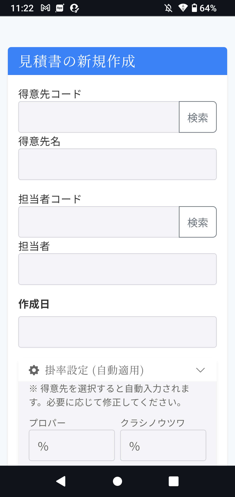
4.2 基本情報の入力
得意先や担当者、備考などのヘッダー情報を入力します。
- 得意先コード: 入力して検索ボタンを押すと、得意先名や掛率設定が自動入力されます。
- 担当者コード: 入力して検索ボタンを押すと、担当者名が自動入力されます。
- 掛率:得意先マスタから参照します。商品登録時に自動入力されますので、変更する場合は事前に行ってください。
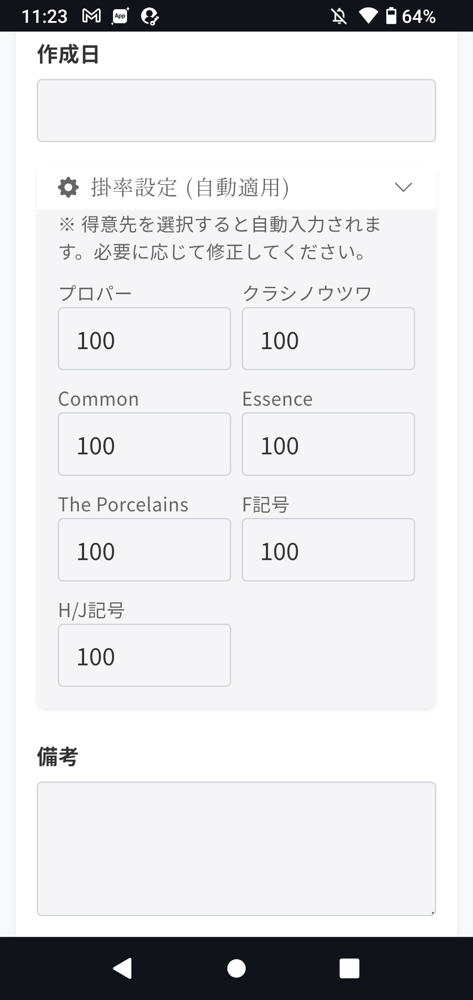
4.3 商品明細の追加
「＋ 行を追加」ボタンを押して、商品追加モーダルを開きます。
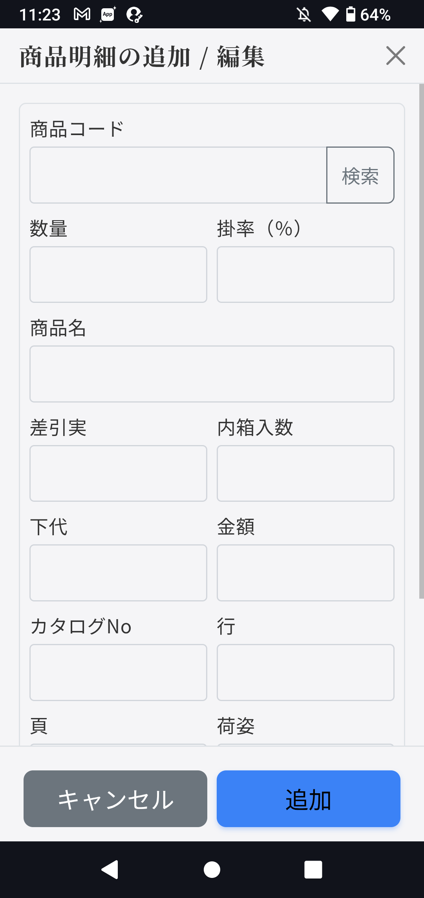
-
商品検索: 商品コードを入力します。スキャナーで読み取ると自動的に検索され、詳細が表示されます。
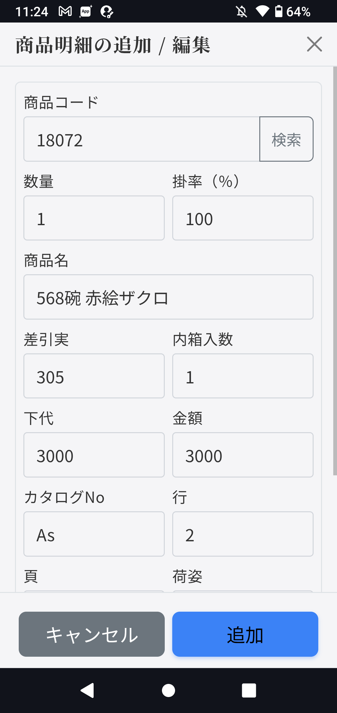
-
数量・掛率の入力: 数量と掛率を入力します。
(注) 掛率の自動適用について:
以下の優先順位で掛率が決定されます。
- 手入力: この画面で直接入力した値が最優先されます。
- 自動計算: 何も入力しない場合、得意先ごとに設定された掛率ルール（商品カタログNoの種類による分類）に基づいて自動的に入力されます。
- 追加: 「追加」ボタンを押すと、見積明細に行が追加されます。
4.4 明細の編集・削除
追加した明細行は、数量や掛率を直接編集したり、削除ボタンで削除したりできます。
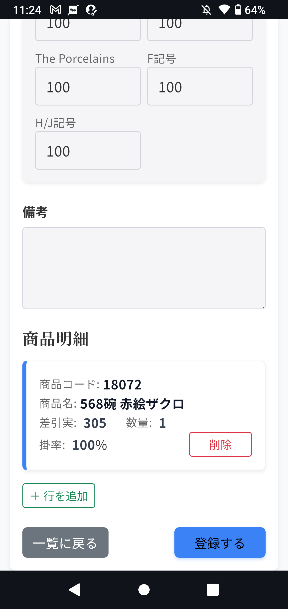
5. 見積書の印刷
印刷はkintoneから行います。
- kintoneへログイン
https://ahb4o.cybozu.com/k/126/
こちらのリンクからkintoneにログインしてください。
ユーザー名： 営業共有
パスワード： saikai5555
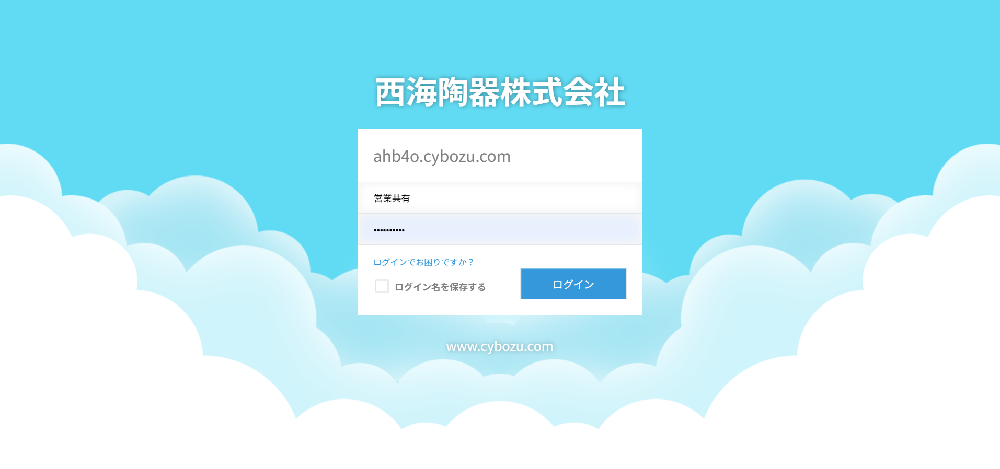
- 見積の選択
一覧の中から印刷したい見積をクリックしてください。
複数の見積をまとめて印刷することはできません。
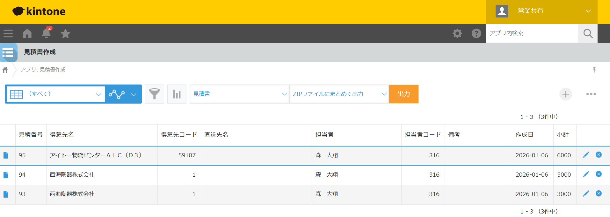
- 印刷
オレンジ色の出力ボタンを押してください。
PDFファイルが作成されますので印刷してください。
6. よくある質問 (Q&A)
Q. Kintoneのデータが反映されません。
A. 一覧画面の「kintone から最新を取得」ボタンを押してください。それでも反映されない場合は、作成日が検索範囲に含まれているか確認してください。
Q. スキャナーで読み取っても反応しません。
A. 入力欄にカーソルが当たっていることを確認してください。また、端末のキーボード設定が日本語入力（IME）になっていると誤動作することがあるため、入力モードを「半角英数」に切り替えてお試しください。
Q. 入力中のデータは保存されますか？
A.
はい、ブラウザに一時的に自動保存（オートセーブ）されます。誤ってブラウザを閉じてしまっても、再度開いた際に復元することができます。復元の際は、画像の画面で「OK」を押してください。ただし、完全に保存するには「登録する」ボタンを押して完了させてください。
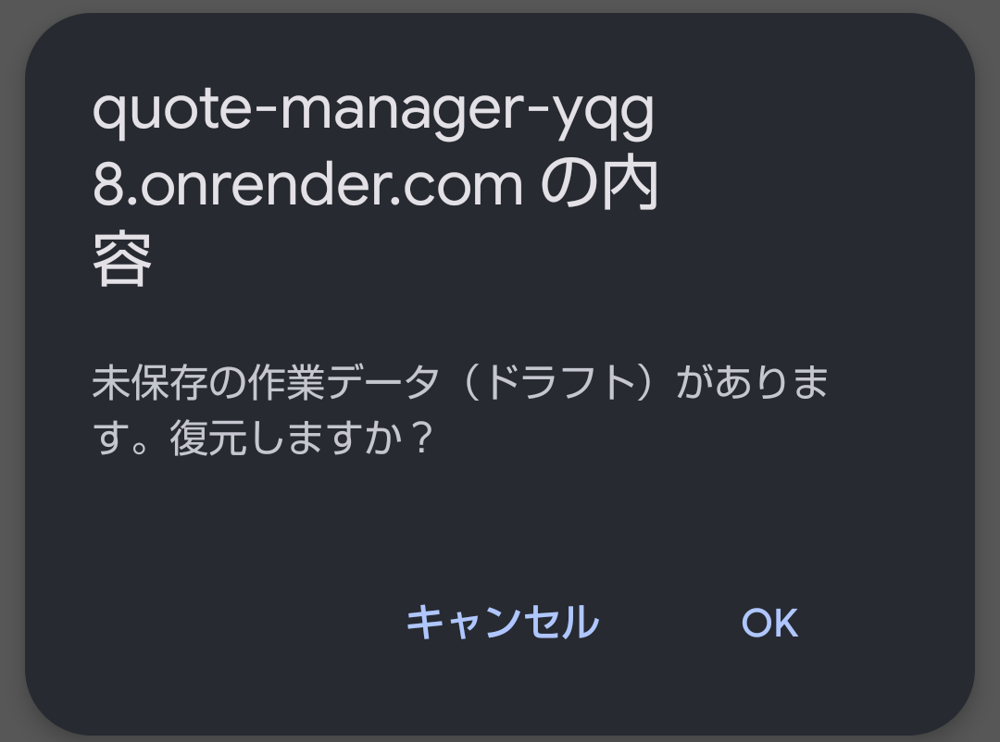